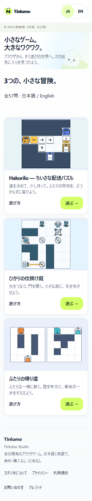

2026-09-16 · ローカルRC · 公開0本 · Human確認待ち
Tinlumo / ティンルモ
制作元表記：Tinlumo Studio。法人名・公開運営者の確定ではありません。
今回の変更
Nolippa / Nolippa Studioの採用を撤回し、中央設定からHeader・Footer・title・metadata・運営草案をTinlumoへ更新しました。
Hakorilo / ハコリロ / ちいさな配送パズル、他2作品の名称、旧URL・保存キー、全57問、Art・Motion・音、図形マーク・favicon、旧Baselineは変更していません。
撤回と公開前確認
Humanが営業中の既存事業NORIPPA（ノリッパ）を追加調査で確認したと報告したため、撤回を記録しました。こちらで営業状況・商標を独立確認したとは扱いません。旧選択記録には撤回注記を追加し、旧QAはそのまま保全しています。
Tinlumoの商標確認は未完了。domainも未取得扱いです。Hakorilo等の権利、運営者・連絡先・対象年齢等、法務・実機・初見・全編Human受入・公開承認も別Gateとして残っています。
対象回帰：PASS
- 日英ブランド表示、320/1440幅、既存31 HTML route、3作品の起動
- 旧形式save、Hakorilo入力→保存→reload→日英切替、他作品のsaveと音設定保持
- 17非HTML配布ファイルと旧QA証拠がbyte一致。外部request試行・page error 0
- RC build28ページ。公開checkerは18 blockerでBLOCKEDを維持
統合報告・再現・残件 · 回帰結果 · 公開blocker · 配布manifest
現在の画面

実機・聴感・初見・Human全編受入は今回未実施。既存Securityの2件限定判定を維持。stage / commit / push / deploy / LAN再公開 / 購入 / 契約 / 外部登録・問い合わせ送信0。
担当実モデル：gpt-6-astra。Human確認待ちで停止。